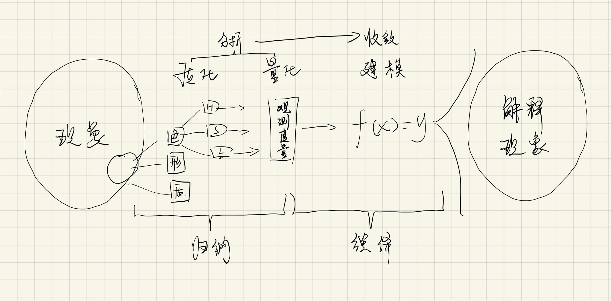
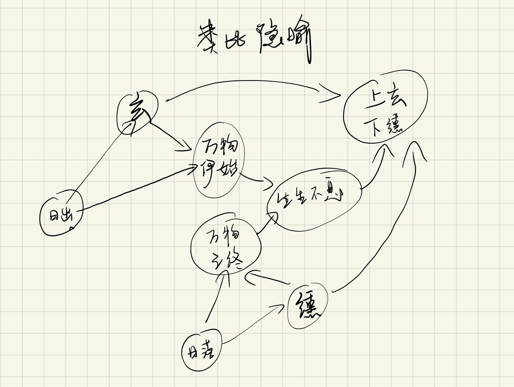
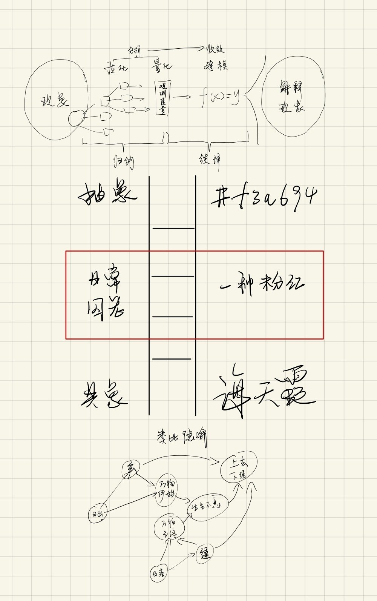

海天霞、#f3a694 以及日常语言的囚笼：你要如何进入这个世界？
前几天逛书店，无意中翻到郭浩老师的《中国传统色彩》，惊叹于这些颜色居然有如此美妙的名字和寓意。
玄（#201208），黑中泛赤，说的是太阳将从地平线出来时一霎那的天光之色；（图 2）
纁（#86351a），太阳刚落于地平线时泛出的余光之色，红黄交叠。皇帝祭祀，衣服配色是上玄下纁，以表达对天地敬畏之心。（图 3）
东方既白（#98aec8），一种浅蓝白，苏东坡和他的朋友们于船上宴饮后宿下，翌日清晨，天空微明，看见蓝中透白的天色，《赤壁赋》中写到：「相与枕籍乎舟中，不知东方之既白」。（图 4）
暮山紫（#8986a9），出自《滕王阁序》「潦水尽而寒潭清，烟光凝而暮山紫」，「年轻的诗人站在夕阳的山前，水雾烟，余晖光凝固在一起，给山罩上一层薄紫色，他怦然心动，落笔而成：暮山紫」。
海天霞（#f3a694），一种粉色，顾名思义，说的是海天交汇处晚霞所映出的颜色……（图 5）
为每个传统色标出色彩代码，是十分败兴的行为。原书中没有出现任何色彩编号，是刻意拒绝将这些颜色放置在“色彩科学”的坐标系中，我非常理解，这会让玄黑褪为深暗红，会让东方既白关联上马卡龙，会让海天霞沦为配色参考书里的一串代码。（图 6）
让海天霞与#f3a694 同框，是我刻意为之，这能引出今天的话题：我们为经验对象命名的方式，决定了我们打开世界的方式。
看完本文，若再有人问：东西方思维方式差异/艺术直觉 vs 科学理性各自特点/故事隐喻 vs 抽象逻辑的优劣……这类问题，你可以给他举海天霞与#f3a694 的例子。
我们先来看看一位中国文人是如何介绍#f3a694 的：
海天霞被“发明”于中国明代。当年阉党事败，宦官刘若愚受诬，蒙冤入狱，在狱期间，他效司马迁为榜样，写下《酌中志》，这部明代杂史成为后世珍贵史料，书中提到：「海天霞，内织造局所造新色也，似白而微红」。
内织染局专司宫廷缎匹，调制出这种新颜色，用来制作宫人春季打底内衣。似白而微红的内衣，搭上青绿色纱罗外衬，淡红配青绿，有“瑟瑟波纹衬海霞”之观感。明末诗人秦兰徵曾在《天启宫词》里赞叹：「烂漫花棚锦绣窠，海上霞色上轻罗，斗鸡打马消长昼，一半春光戏里过」
那本狱中写成的《酌中志》，忿忿苦闷中亦记录了许多诸如海天霞的美好细节，如：
逆贤擅政，则王体乾等夏穿真青油绿怀素纱，内以玉色素纱衬之，满身活文，如水之波，如木之理；而冬则天青、竹绿、油绿怀素纱，光耀射目，争相夸尚，以艳丽为美。
据说后来崇祯皇帝读到此书，“戚然改容”，刘若愚得以重见天日，「记叙美好总归是有希望的」。
接下来，是西方人对海天霞的解释：
海天霞，名词，该名词所指经验范畴，统称为「颜色」。
颜色，形色质三要素之一，视觉感官中任何对象，都有颜色之维。其本质是不同波长的光对视锥细胞产生刺激，被我们以不同视觉-心理表征加以区别，这些表征就是「颜色」。人之所以能拥有分辨颜色的能力，乃是自然选择的结果：那些不能在万绿丛中一眼盯住红苹果的智人，留不下自己的后代。
在今天的色彩符号系统中，所谓的「海天霞」可以确切地划定为代号#f3a694 的颜色。
解释完了，再多说一个字都是胡话。
相比刘若愚的故事，西方人对颜色的解释精确但枯燥，原因在于他们传承了古希腊人留下的抽象理论偏好：
一旦为观察对象抽象出各种维度，我们就能在维度之中进一步展开抽象，比如为视觉对象抽象出形状-颜色-质感，又为颜色抽象出色相、饱和度、亮度。
一旦我们将对象切分得足够细碎，我们就有机会仔细地“观测度量”每一个细碎维度的变化规律。只要能把握变量，就能用抽象的形式语言（代数、编程语言）来建模，比如色相、饱和度、亮度三个变量所构成的 HSL 色彩空间。
一旦建模成功，这个模型所映射的经验范畴中的所有未知因素都将被消除，包含了无穷信息量的经验世界，将被几十个字节的符号规则所笼罩，这叫做“抽象的普遍性”。比如在 HSL 的符号规则体系中，整个人类世界不会再有未知的色彩。只要逻辑允许，模型和另一个模型可以相互映射，比如 HSL 色彩与 RGB 色彩相互映射。对计算机来说，H11 S39 L76 总是等价于 R243 G166 B148，总是能被换算成#f3a694。
（东西方思维之别，见图 7 与图 8）
你会发现，现代人眼中的颜色已经完全抽象化，成了毫无实质的“经验错觉”，彻底祛了魅，所谓暮山紫、海天霞，无非是特定条件下反射散射的因缘际会，诗意的栖居在理性逻辑前顷刻消解，多无趣……
按照套路，写到这里就可以开始批判“科学理性”了。理性世界观很无聊，老是搞这种批判其实更无聊——说得好像我们个个都是擅分析，懂收敛的理性人儿，过度运思以至于走火入魔，要写点东西棒喝劝戒一番。屁啊，咱们哪有那么能耐？真能给自己脸上贴金。
一个人若能在自己的专业领域提出 HSL 这样的解释模型，都是极其了不起的成就，将大幅提升该领域的生产力，刘勰在《文心雕龙》中写道，我们论说事理，追求的就是「穷于有数，追于无形」，今天的色彩科学理论无疑做到了。
古人细腻的感受与修辞能力令人向往，现代理论极具普适性的抽象之力同样值得敬畏。真正值得批判，迫切需要来一棒子的，是「日常语言囚笼」。
啥叫日常语言的囚笼？
我在《说话 Pro》课程中介绍过一个抽象之梯，这是语言学家塞缪尔·早川提出的一个理论工具，我们可以用它来分析我们日常语言的表现力。
抽象之梯的底部，是最具体的概念，比如「汤质的耳垂」、「镰仓街边的海」，顶端，是最抽象的概念，比如「有机物」、「无机物」。我们用来理解、言说世界的每一个词，都能在抽象之梯之上找到它的位置。
某些写作教材常常会提到抽象之梯，并给出建议：如果你要追求深刻的理解或表达，要么去到抽象之梯的最底端，用极其具象写实的话语展开你的经验，要么去到抽象之梯的最顶端，用极其抽象凝练的符号收敛你的经验。简单来说，要么说最接地气的话，要么拔高作概括，少整些不上不下、两头不沾的陈词习语。
比如，文学作品里那些一笔扎进经验细节里的白描，就是在梯子底部的话语：「一刻工夫，一碗肉已不见，骑手将嘴啃进酒碗里，一仰头，喉节猛一缩，又缓缓移下来，并不出长气，就喝汤。一时满屋都是喉咙响」。
以本人拙劣的作文水平，大概会写成「骑手饿极了，用大碗喝汤，满屋都是汤水咕咕下肚的声音」。饿是一种抽象，「饿极了」相比「一碗肉不见了、啃进碗里、不出长气、喉结猛一缩」显得十分多余；「汤咕咕下肚」依然是抽象的，“下肚”是他人的内在经验和作者的刻意想象，相比「喉结响」，显得很间接，难以凝结成意象。
又比如，上文中「穷于有数，追于无形」就是高度概括的表达。展开之后，就成了上文中的「一旦建模成功，这个模型所映射的经验范畴中的所有未知因素都将被消除，包含了无穷信息量的经验世界，将被几十个字节的符号规则所笼罩……现代人眼中的颜色已经被完全抽象化，成了毫无实质的“错觉”」，如此啰里八嗦也许是必要的，但的确不高级。
我无意讨论表达与写作的技巧，将这把抽象之梯推而广之，「海天霞」们正是那些深插入泥土的词汇，#f3a694 则是极其精准的抽象符号，而我们日常语言中的「粉紫色」，就是悬在中间，不上不下的陈词滥调。（充满商品拜物教气质的“马卡龙色系”、“蒂夫尼蓝”、“卡地亚红”们也许更糟）
这里的「粉紫」、「饿」，都是「方便概念」，它们直接、无深度、易于操作、刚好够用。粉紫既不能如海天霞般唤起我们的感受力，也无法像#f3a694 般调取一个精密的符号规则来释放生产力。自从知道那种感觉叫「饿极了」，就再也听不见喉结的响动声。
这是所谓「日常语言囚笼」。价值、成功、金色、辉煌，成功就是价值，多金就是辉煌……日常语言为我们划出了一个结界，我们用它抵御这个世界的复杂。一旦我们发现人生不止于此，世界另有蹊跷，于是有事要说，有理要辩，便会立刻发现语言本身就是最难于突破的屏障。梯子上下两端，都能获得某种眼界与自由，夹在中间，只能落入尴尬，沦为庸常。（图 9）
以上是《中国传统色》带来一些启发，最后祝各位都能左手海天霞，右手#f3a694，喜提独立之精神，自由之思想。
一边是诗性的表达，一边是理性至上，两者都于我们有益，都有助于我们理解这个世界。
  
内容来自：